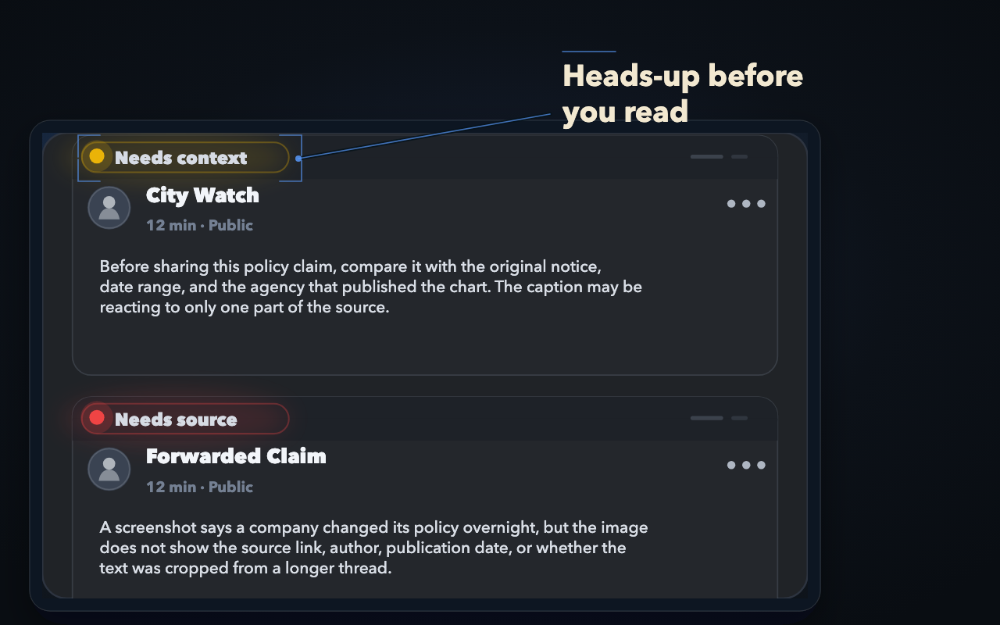
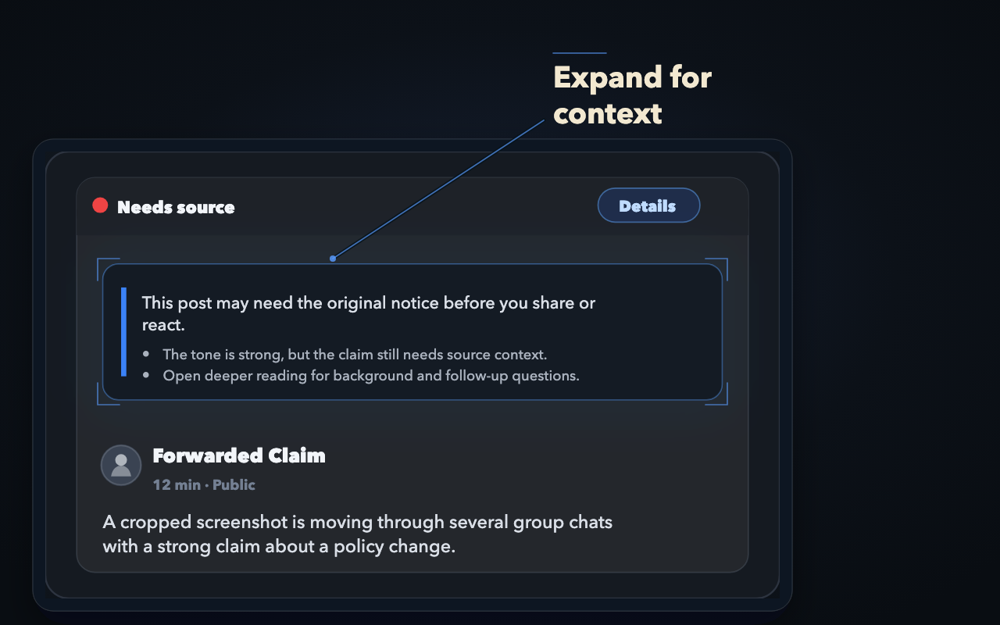
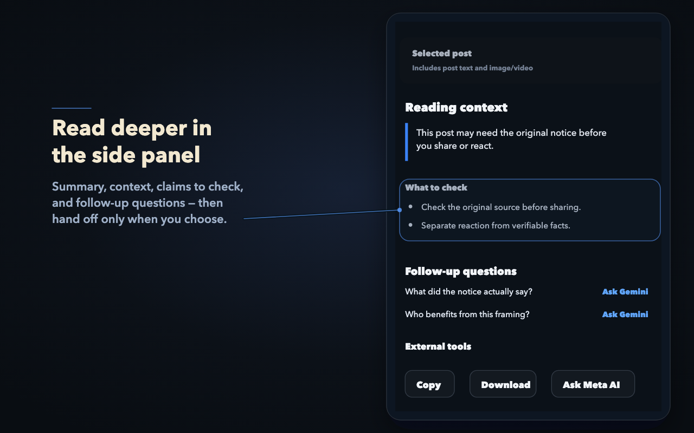

Truly CWS asset candidates
Generated from the same balanced demo frames used for docs/assets/demo/truly-demo-balanced.gif.
Original vs professional
Heads-up before you read Original

Heads-up before you read Professional candidate

Expand for context Original

Expand for context Professional candidate

Read deeper in the side panel Original

Read deeper in the side panel Professional candidate

Current selected set
01-feed-signal Heads-up before you read
02-expanded-context Expand for context
03-side-panel-handoff Read deeper in the side panel